① 浏览器内 · 实体记忆查询① In browser · Memory search
点扩展图标 → 实体记忆查询,在搜索页提问。装好即用,无需额外安装。Click the extension icon → Memory search and ask there. No extra install needed.
✓ 已就绪Ready
Personal AI 在后台悄悄替你记住工作里的一切。这页告诉你:记忆是怎么捕获进来的,能在哪些地方提取回来,以及怎么让它替你做事。 Personal AI quietly remembers your work in the background. This page shows how memories are captured, where you can retrieve them, and how to let it act for you.
全部零配置(会议副驾需一次授权),装好就能体验。All ready to use (Meeting Pilot needs one authorization).
Personal-AI-Desktop-<version>-Installer.pkg → 在 Applications 打开 Personal AI.app → app 内完成 Memory Service 与线程绑定。详见「记忆随身」条目。Three steps: download Personal-AI-Desktop-<version>-Installer.pkg → open Personal AI.app from Applications → bind Memory Service and threads inside the app. See "Memory on mobile".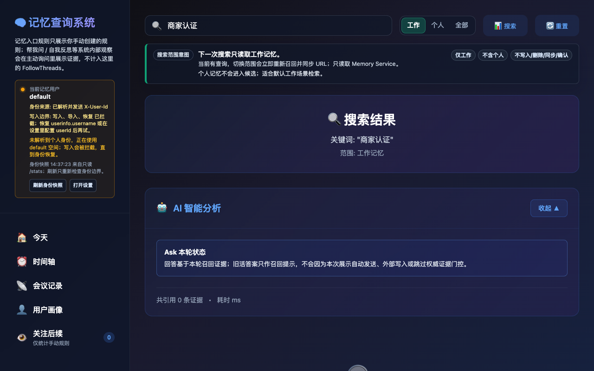
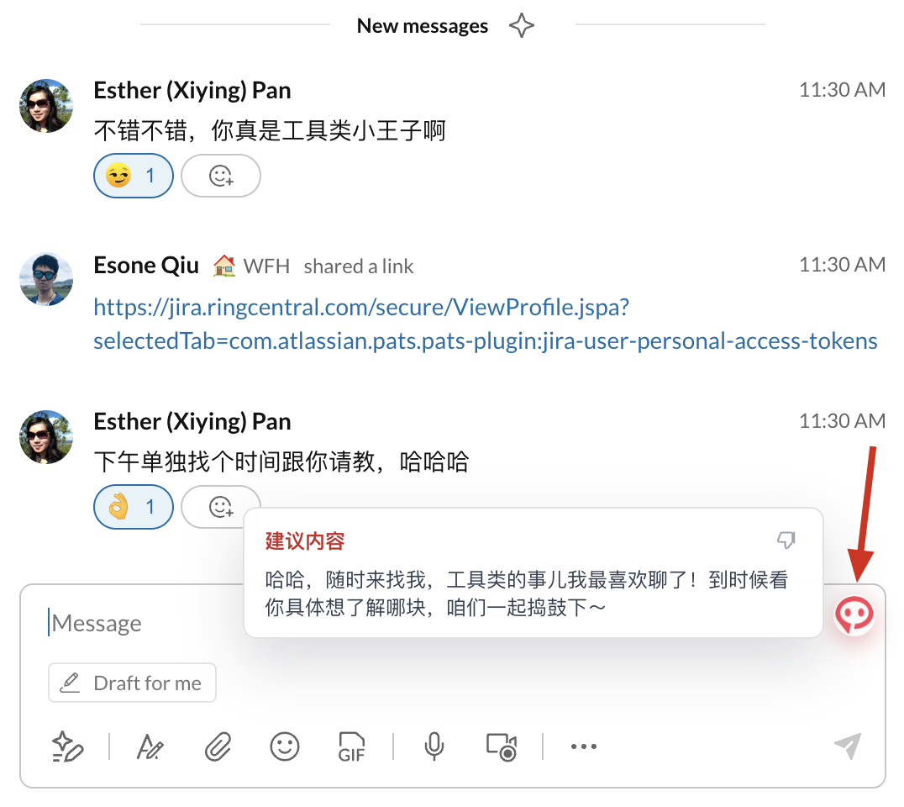
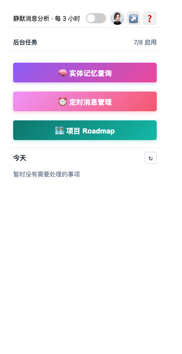
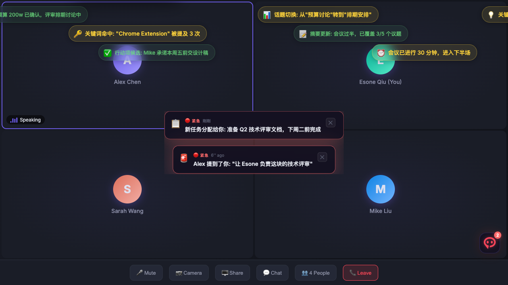
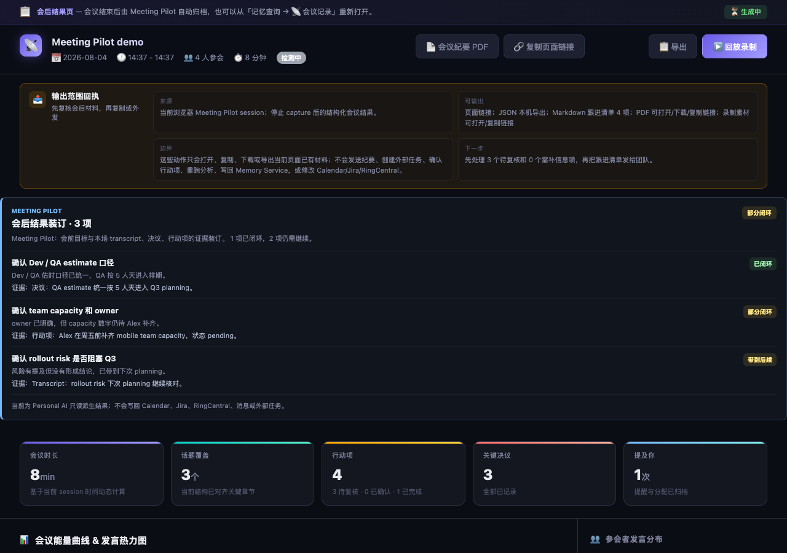
N/A,有 fixVersion 但 DORA 还没数据时显示可点的 pending。Green backend panel: summarizes Early Build and Rollout to Prod for dependency issues (RCV by default), so you know if the backend is ready. Shows N/A without dates, or a clickable pending when a fixVersion exists but DORA has no data yet.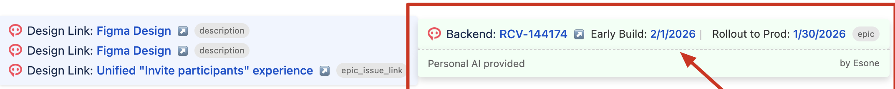
DESIGN_LINK_DOMAINS 补充内部原型站点;UX 项目识别默认 UX*,可用 DESIGN_JIRA_PROJECT 精确指定。Add internal prototype hosts via DESIGN_LINK_DOMAINS; UX project matching defaults to UX* and can be pinned with DESIGN_JIRA_PROJECT.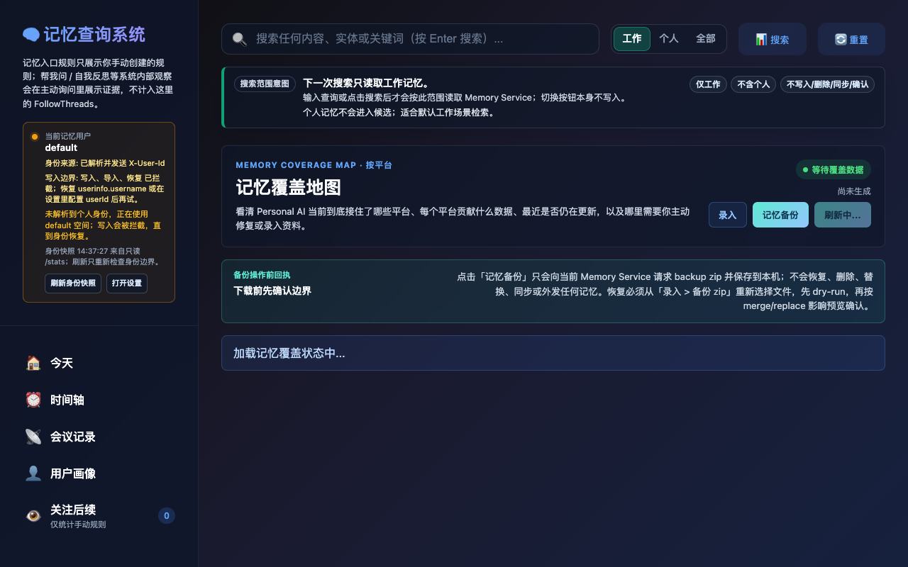
大部分捕获是自动、低打扰的;这里是你可以主动参与的入口。Most capture is automatic and quiet; these are the entries you drive yourself.
…迁移到 v2 之前,需要先把所有 scope 参数改为小写下划线格式,否则网关会静默丢弃请求,这是文档里最容易漏掉的一步……before migrating to v2, convert every scope parameter to lowercase snake_case or the gateway silently drops the request — the step most people miss in the docs…
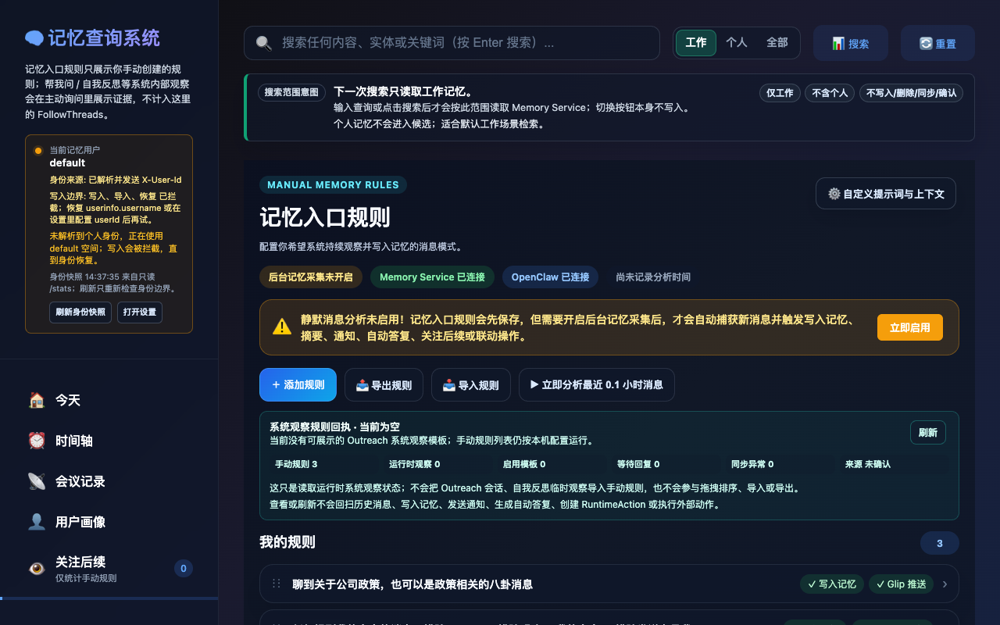
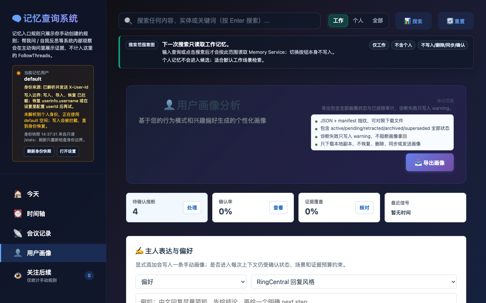
每项都可先看效果演示,再决定要不要配。Preview each one before deciding to set it up.
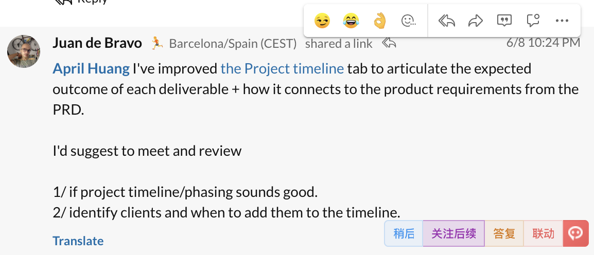
Personal-AI-Desktop-<version>-Installer.pkg,在 Applications 中打开 Personal AI.app。Download and install Personal-AI-Desktop-<version>-Installer.pkg, then open Personal AI.app from Applications.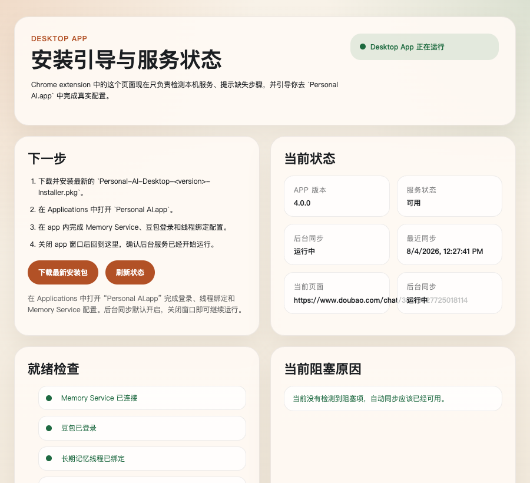